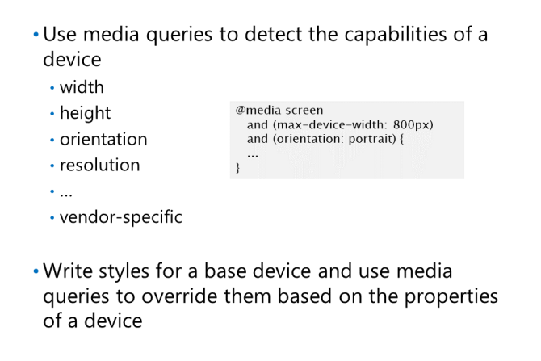

wbr jest podobny do tagu br z tym wyjątkiem, że określa, że przeglądarka powinna wstawiać tylko
podział linii, jeśli jest to konieczne, aby zapobiec zawijaniu tekstu do następnego wiersza.
HTML4 rozpoznawał
następujące typy mediów:
• speech: syntezatory mowy
• braille: Czytniki dotykowe w alfabecie Braille'a.
• embossed: drukarki brajlowskie.
• handheld: urządzenia mobilne (opisane jako
„mały ekran, monochromatyczny, mapowany bitowo
grafika, ograniczona przepustowość ”w specyfikacji HTML4, datowanej na 1999 rok!).
• print: Ekrany podglądu wydruku i wydruk.
• projection: Projectors.
• screen: Computer screens
• tty: Teletypes
• tv: Telewizory i inne urządzenia o niskiej rozdzielczości z ograniczoną możliwością przewijania.
• all: dotyczy wszystkich urządzeń
Wiele stron internetowych nadal korzysta z tych atrybutów, zwłaszcza jeśli chodzi o dołączanie stylu drukowania
arkusz do strony. Na przykład dwa elementy przedstawione w poniższym przykładzie prowadzą najpierw do arkusza stylów
zawierający reguły dla dowolnego urządzenia (głównie ekrany), a następnie do drugiego arkusza stylów tylko dla drukarek
<link rel="stylesheet" type="text/css" href="core.css" media="all" />
<link rel="stylesheet" type="text/css" href="print.css" media="print" />
Reguła CSS @media wykonuje podobne zadanie jak atrybut media. Umożliwia identyfikację zestawu
reguły stylów dla typu nośnika w istniejącym arkuszu stylów, zamiast tworzenia osobnego arkusza stylów
specyficzne dla każdego rodzaju nośnika. Korzystasz z reguły @media w następujący sposób:
Wykrywanie możliwości urządzeń za pomocą zapytań o media

umożliwiają programistom
sprawdzić właściwości fizyczne urządzenia,
w tym wysokość i szerokość urządzenia, orientacja,
i rozdzielczość.
Zapytanie o media składa się z dwóch części:
• Rodzaj nośnika, taki jak ekran, druk, mowa itp.
• Zestaw nawiasów zawierających zapytanie, który zawiera charakterystykę urządzenia, dwukropek, a następnie
wartość docelowa.
Poniższe przykłady pokazują, jak zdefiniować zapytanie o media w elemencie HTML i regule CSS.
Jeśli urządzenie przeglądające odpowiednią stronę spełnia kryteria zapytania, zastosuje style CSS
powiązane z zapytaniem:
Możesz dołączyć wiele zapytań, łącząc je z and, or, and not. Na przykład:
@media screen and (max-device-width: 480px) and (resolution:300dpi) {
...
}
Możesz przetestować 13 cech urządzenia w zapytaniu o media. Poniższa lista zawiera ich podsumowanie
• width, height: The width and height of the viewport (usually the browser window).
• device-width, device-height: The width and height of the active device screen (or paper, if printing).
• orientation: Whether the device is in portrait or landscape mode.
• resolution: The pixel density (in dpi or as a ratio) of the target device.
• aspect-ratio: The width to height ratio of the viewport.
• device-aspect-ratio: The width-to-height ratio of the device screen (or paper).
• color: The bits per color of the target display.
• color-index: The total number of colors the target device screen can show.
• monochrome: The bits per pixel in a monochrome frame buffer.
• scan: The scanning method of a TV. Possible values are progressive and interlace.
• grid: The display type of the output device: grid or bitmap.
Wszystkie te cechy oprócz skanowania i siatki pozwalają również na zapytanie o minimum i maksimum
wartości również. Na przykład możesz określić min-width, max-width, min-resolution, max-resolution...
Wdrożenie podejścia mobilnego z zapytaniami o media
Wykrywanie starszej wersji programu Internet Explorer przy użyciu warunkowych komentarzy
poniższy kod wykrywa, czy użytkownik korzysta z Internet Explorer 9:
<!--[if IE 9]>
<p>Welcome to Internet Explorer 9.</p>
<![endif]-->
Możesz użyć ! aby odwrócić sens stanu. Możesz także użyć operandu IE w izolacji
aby ustalić, czy użytkownik korzysta z przeglądarki innego dostawcy, na przykład:
<!--[if !(IE)]>
<p>You are not using Internet Explorer.</p>
<![endif]-->
Możesz także użyć operatorów takich jak lt (mniej niż), gt (większy niż), lte (mniejszy lub równy) i gte
(większe lub równe) w celu wykrycia zakresu wartości, jak pokazano w poniższym przykładzie, który wykrywa
czy użytkownik korzysta z wersji Internet Explorera wcześniejszej niż Internet Explorer 9:
<!--[if lt IE 9]>
<p>Please upgrade to Internet Explorer 9 or later.</p>
<![endif]-->
Następny przykład pokazuje, jak używać komentarzy warunkowych, aby załadować odpowiedni arkusz stylów dla pliku
wersja przeglądarki Internet Explorer działającej w systemie operacyjnym użytkownika:
Możliwe jest również zdefiniowanie wbudowanych komentarzy warunkowych, aby wszystkie style mogły być zawarte w arkuszu stylów
Jeśli zastosujesz to podejście, możesz poprzedzać style wersją programu Internet Explorer, dla której styl
dotyczy. Na przykład poniższy kod ustawia właściwości modelu pudełka dla elementu artykułu, a następnie dodaje
poprawka do przeglądarki Internet Explorer 6:
Możesz także użyć komentarzy warunkowych, aby uwzględnić skrypty na stronie internetowej w następujący sposób:
Definiowanie arkuszy stylów do drukowania
Możesz je utworzyć
style w osobnym arkuszu stylów lub możesz użyć
Reguła @media, aby dodać je bezpośrednio w istniejącym
arkusz stylów, jak pokazano w poniższych przykładach.
Style drukarki często implementują następujące reguły:
Ustaw rozmiar czcionek na wartości w punktach, tak jak w przypadku dokumentu Word, ustaw ich kolor na
ciemnoszary i usuń wszelkie efekty, takie jak cień tekstu.
Rozwiń wszystkie linki i skróty na stronie, aby adres URL linku lub rozwinięty tekst
skrót jest wydrukowany po prawej stronie tekstu.
Ułóż zawartość w jednej kolumnie, chyba że zawiera indeks lub glosariusz, w którym to przypadku dwie kolumny
jest do zaakceptowania.
Zdefiniuj docelowy rozmiar drukowanej strony, marginesy wokół sąsiadujących stron i minimum
liczba linii w akapicie wydrukowanym na górze (widows) i na dole (orphans) strony.
Aby to osiągnąć, możesz użyć reguły @page:
Reguła @page umożliwia także określenie różnych układów dla stron lewej i prawej strony
w dokumentach dwustronnych przy użyciu pseudoklasy: left i: right, jak pokazano poniżej: